ALZADO ROJO
PORTAFOLIO DE ARQUITECTURA • 2026
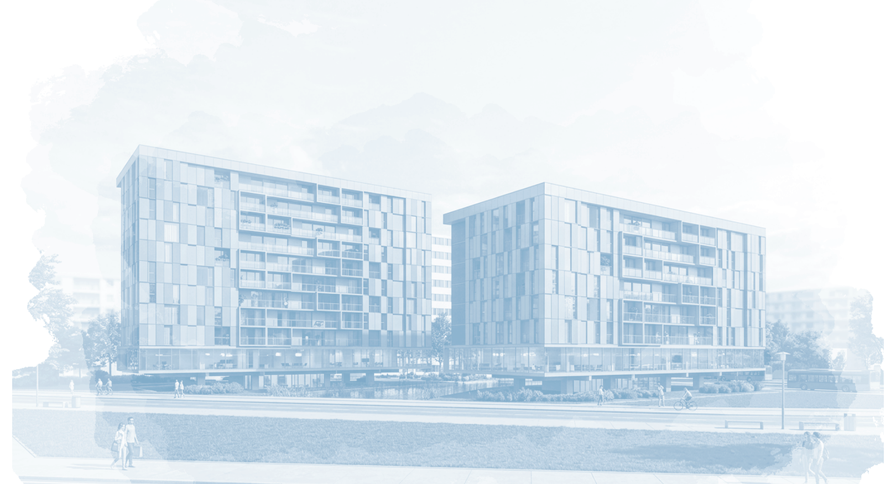

Arquitecto especializado en diseño paramétrico, prefabricación en madera y sustentabilidad. Enfoque integral que articula la optimización pasiva basada en datos con el rigor constructivo y la precisión del detalle ejecutivo para materializar arquitecturas de alto rendimiento ambiental y espacial.
Sistema constructivo prefabricado en madera contralaminada (CLT) y entramado ligero para vivienda colectiva en altura. Morfología bioclimática optimizada mediante modelado paramétrico para máxima captación solar pasiva, ventilación cruzada y drástica reducción de huella de carbono.
Despiece axonométrico del módulo prefabricado en CLT, detalle de encuentros estructurales para montaje en seco y simulación paramétrica de radiación solar y confort pasivo.
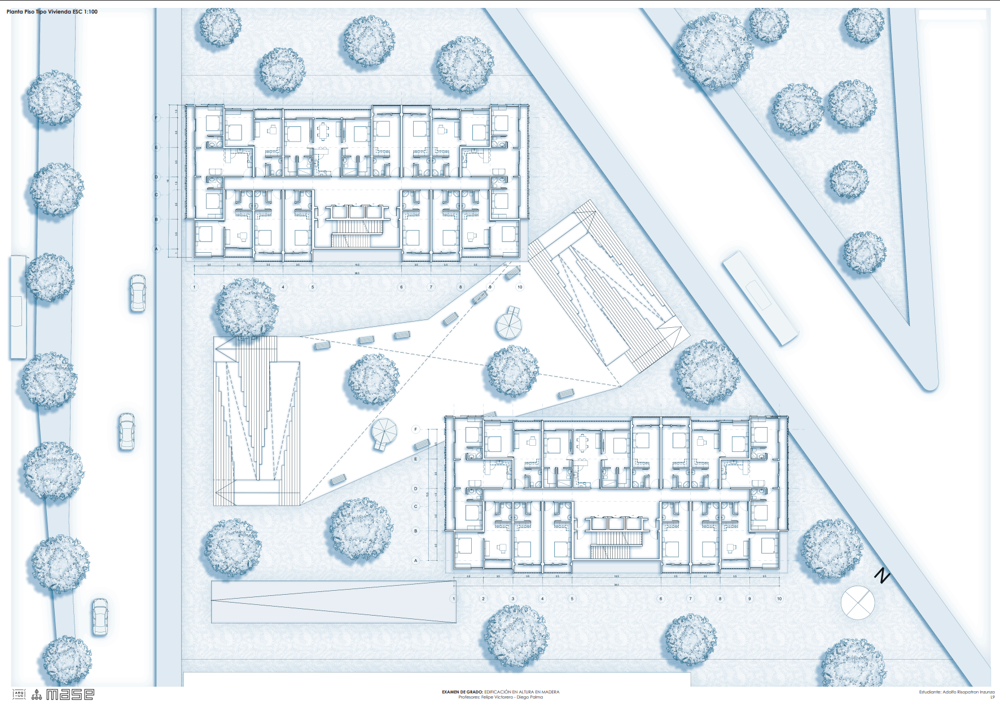
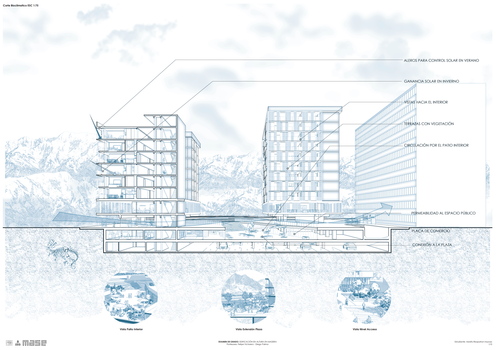
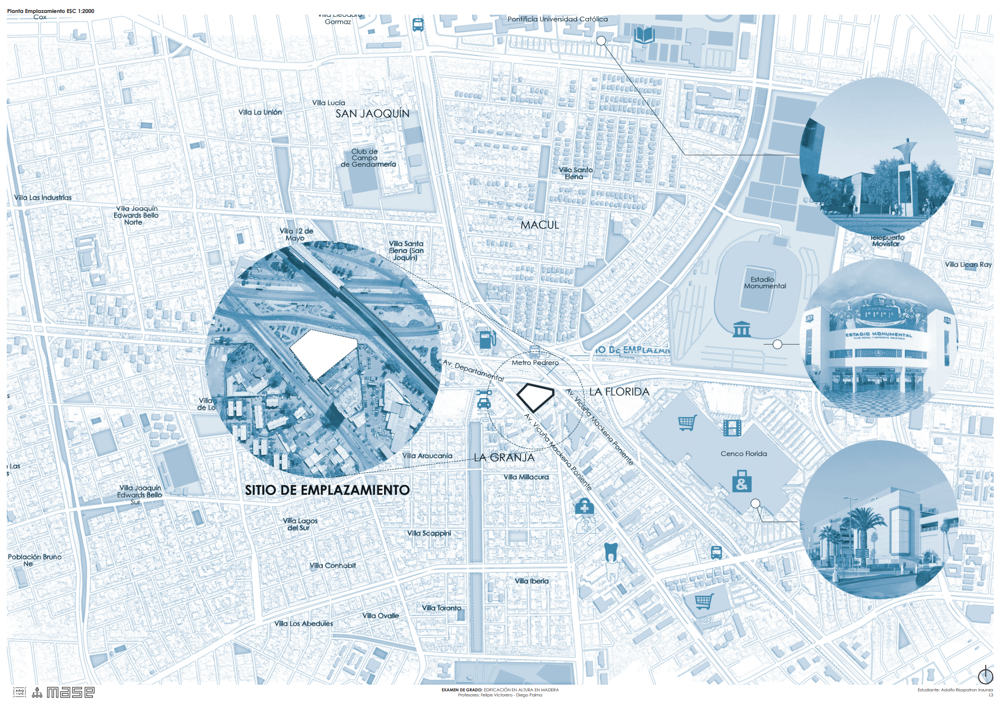
Intervención topográfica excavada que restituye el parque público en cubierta. Estructura monumental de vigas cajón en hormigón a la vista y lucarnas perimetrales que bañan las salas de exhibición con luz cenital difusa y homogénea, estabilizando pasivamente la temperatura interior de las galerías.
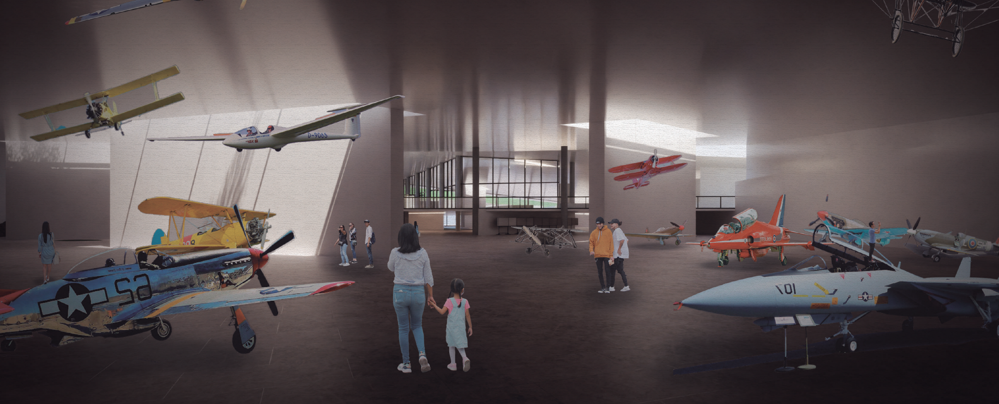
Planta general de arquitectura y secciones constructivas analíticas. Inserción topográfica bajo rasante y modulación de vigas y lucarnas cenitales para iluminación natural homogénea.
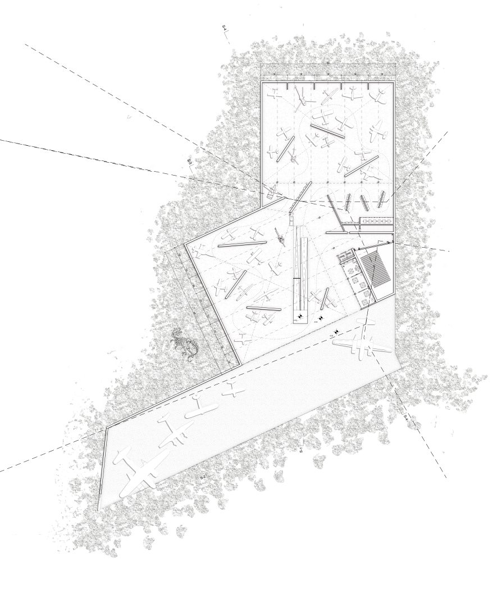
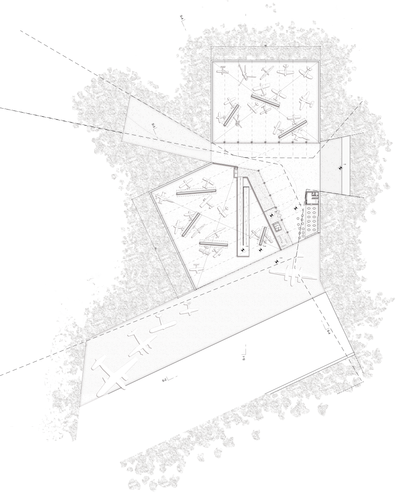
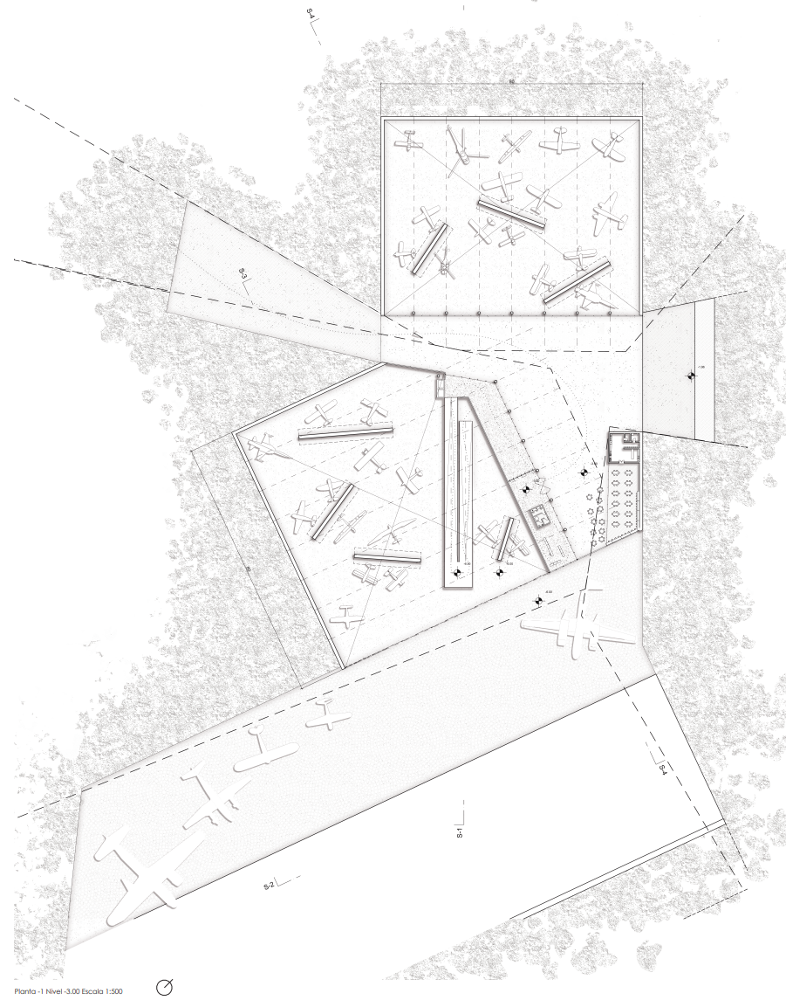
Propuesta paisajística y conmemorativa en la topografía costera de Pichilemu. Articulación de terrazas verdes, columbarios modulares de hormigón visto y muros de piedra integrados a la pendiente natural.

Perspectivas paisajísticas del conjunto memorial, articulación de terrazas verdes escalonadas y columbarios modulares de hormigón integrados a la ladera costera.


Documentación ejecutiva de arquitectura y detalles constructivos a escala 1:50, 1:20 y 1:5. Rigurosa disciplina de valorización gráfica, coordinación de especialidades e identificación precisa de encuentros para faena y montaje en seco.

Sección constructiva general por fachada a escala 1:20, detalles de encuentro milimétrico 1:5 y secuencia axonométrica de capas de aislamiento para montaje en seco.
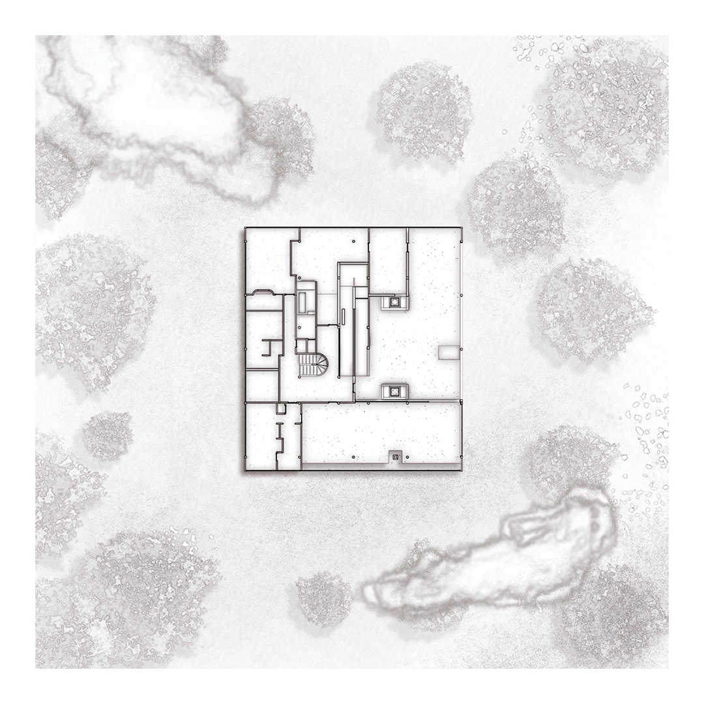
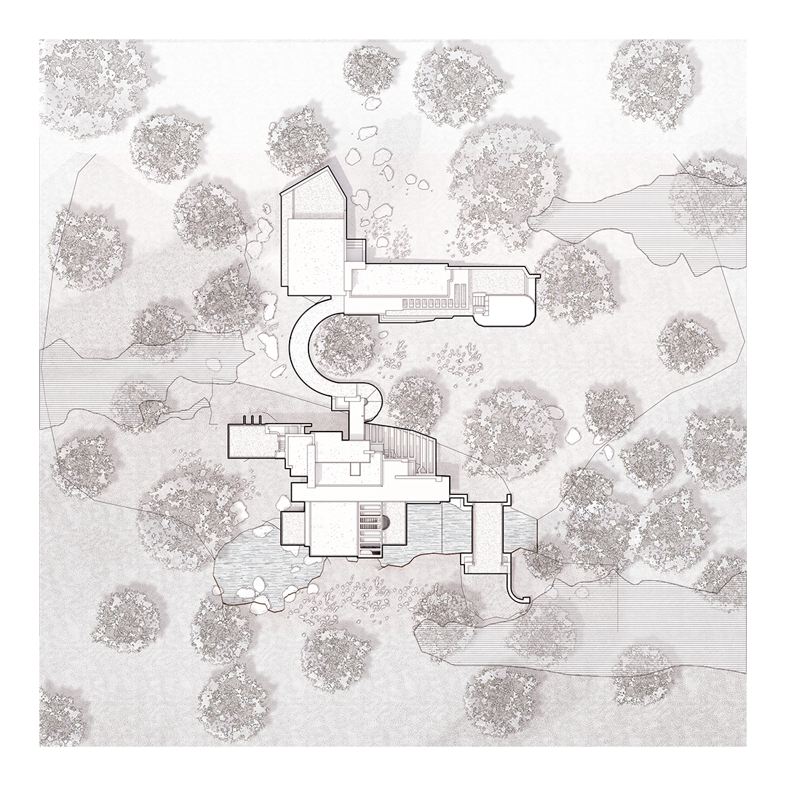
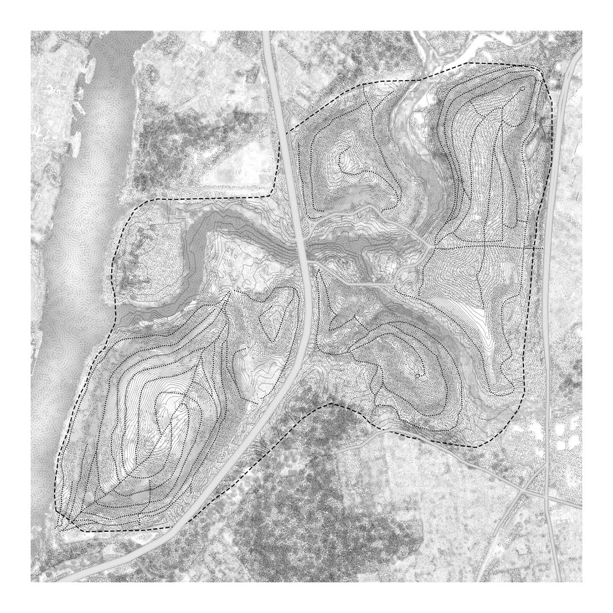